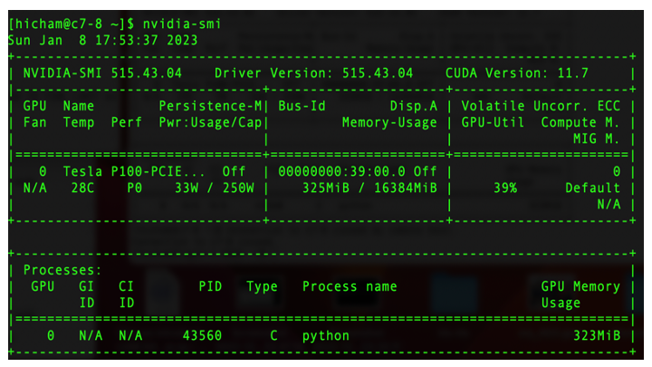
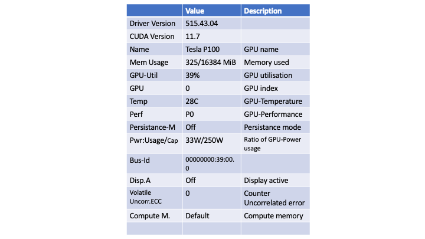
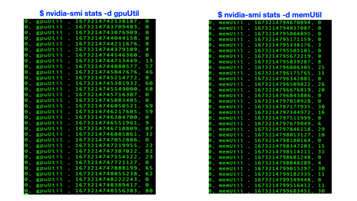
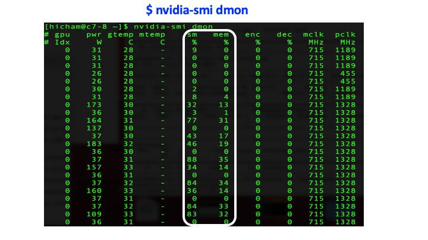
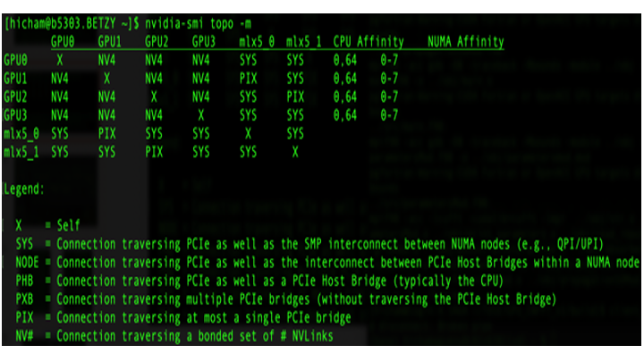

Basic commands for GPU-usage
We present some basic command-lines that provide statistics about GPU utilization. A special focus here will be the commands nvidia-smi and rocm-smi, which can be used for monitoring GPU devices on heterogenous systems involving CPUs and GPUs. This guide is motivated by the increase use of software with GPU support, and in which the access to GPU usage is not often trivial. It thus represents an initial step towards improving the utilization of GPUs.
This guide should be useful for users who are running GPU-based applications. By the end of this guide, users will learn about:
How to run
nvidia-smiandrocm-smicommands on HPC systems.How to access specific information related to hardware and software; in particular:
GPU and memory utilizations
Device statistics
Device monitoring
Device topology
How to run nvidia-smi and rocm-smi commands
The commands nvidia-smi and rocm-smi are used in general to monitor and manage GPU applications; and they will be discussed here in the context of HPC systems. These commands should be launched while a submitted application is running. This is necessary in order to collect real-time activities of GPU utilization and memory usage among other metrics. These commands can also be used to access information about GPU-based systems (NVIDIA and AMD), regardless of whether GPU applications are running or not. In the following we present two ways how to run these commands:
The command nvidia-smi is available from an NVIDIA GPU node, and can be accessed in NRIS clusters by following these steps:
Submit a job:
$ sbatch job.slurmDisplay which node:
$ squeue –-meSsh to the listed node e.g.
$ ssh c7-8on Saga and$ ssh b5304on Betzy.Run the command:
$ nvidia-smiFor more options:
$ nvidia-smi -h
Information about GPU nodes can be displayed via the command $ sinfo –p [name-of-partition]. In NRIS clusters, the partition is specified by accel.
Note
Note that access to a GPU node without having active jobs will be denied and will result in Authentication failed.
The command-lines defined above are also valid on an AMD GPU node, in which SLURM is used as a workload manager. Here rocm-smi will be used instead.
An alternative to the first method, is to run the commands nvidia-smi and rocm-smi interactively, as described below. This interactive way permits displaying GPU usage in real-time.
$ for j in {1..10}; do srun --jobid=JobID --interactive --pty nvidia-smi; sleep 2; done
$ for j in {1..10}; do srun --jobid=JobID --interactive --pty rocm-smi; sleep 2; done
where the JobID needs to be specified. In this example, the command nvidia-smi/rocm-smi runs for 10 times as defined by the range {1..10}, in which each run is delayed with 2 seconds, as defined by the option sleep 2. Here additional options can be specified in this syntax to display selective metrics as described in the next section.
Command nvidia-smi
The command utility nvidia-smi is provided by NVIDIA and stands for “NVIDIA System Management Interface”. As the name indicates, the tool is useful for monitoring and managing GPU applications.
In this section, we cover the following options:
Overview of GPU usage
Device statistics
Device monitoring
Device topology
In particular, we show how to display certain statistical information based on the nvidia-smi command and other related options.
Overview of GPU usage
The command nvidia-smi provides a general overview of GPU usage. The output of the command is shown in Fig. 1. The figure contains two tables: The first one provides information about available GPUs and additional technical information related to the hardware, while the 2nd one contains information about different processes running on GPU. We summarize this information in the Table 1.. Here among other information displayed are the driver and cuda versions, the GPU name, memory and GPU utilization. These last two metrics indicate well-utilization of GPUs. The example displayed in Table. 1 (also Fig. 1.) shows that the running application uses 325 MiB of memory (the GPU-device memory is ~16 GiB) and 39% of GPU. Note that the percent refers to the percent of time in the past sampling period, when one or more kernels were executed on the GPU.
In the following we present additional options to complement the information provided by the command nvidia-smi. Such options allow displaying selective information.

Fig. 1. Overview of GPU usage in a NVIDIA’s system - Output from the command nvidia-smi.

Table 1. Description of GPU usage metrics extracted from Fig. 1 (see here for more details).
Device statistics
Displaying statistics of a device is provided by the command nvidia-smi stats. In particular, one can specify additional options to select statistics about GPU utilization (left-hand side) and/or memory utilization (right-hand side), as shown in Fig. 2. This is provided by the commands nvidia-smi stats -d gpuUtil and nvidia-smi stats -d memUtil respectively. The output of the commands is shown in Fig.2. Here the first column indicates the GPU index and the second one displays either the GPU or memory utilization, while the last column indicates the percent of time of either the GPU or memory utilization. More information can be displayed by the command nvidia-smi stats -h.

Fig. 2. Device statistics - Output generated from the command nvidia-smi stats -d gpuUtil (left-hand side) and nvidia-smi stats -d memUtil (right-hand side).
Device monitoring
The device monitoring option provides additional metrics about a GPU-device; in particular, SM (Streaming Multiprocessor) utilization, memory utilization, temperature, power consumption, memory clock rate (mclk), processor clock rate (pclk) (see Fig. 3.). This information is provided by the command nvidia-smi dmon. Here one can also specify additional options to select desired metrics: e.g. the command nvidia-smi pmon -s u displays the GPU utilization together with other metrics mentioned above, while the command nvidia-smi pmon -s m displays the memory utilization combined with various metrics.

Fig. 3. Device monitoring - Output generated from the command nvidia-smi dmon.
Device topology
The device topology option provides information about the nature of interconnect, in particular, in GPU-GPU and GPU-mlx5 (mlx5 refers to Mellanox ConnectX-5) networks as well as CPU affinity and NUMA (Non-Uniform Memory Access) affinity in an HPC system architecture. This is provided by the command-line nvidia-smi topo -m, and is useful for optimizing GPU applications that run on multiple GPUs. The output of the command is shown in Fig. 4. Here the figure represents a matrix composed of four GPU devices (GPU0, GPU1, GPU2 and GPU3) and two Mellanox devices (mlx5_0, mlx5_1), in which each pair is connected via different type of interconnects. In particular, GPUs are interconnected via NVLink, which allows high-bandwidth communication between GPUs. The NVLink in NVIDIA A100, which is displayed in Fig. 4. is the third generation NVLink, and is expected to provide higher performance compared to the first and second generations i.e. P100 and V100, respectively. On the other hand, the interconnect between a GPU and mlx5 is established either through SYS (e.g. GPU0-mlx5_0) or PIX (e.g. GPU1-mlx5_0) connections (see Legend in Fig. 4).
In short, understanding the device topology is useful for ensuring the functionality of, for instance, the GPUDirect RDMA (Remote Direct Memory Access) communication. The RDMA technology permits direct data transfer between a GPU and a third party device (e.g. network interface cards - NICs) through the PCIe (Peripheral Component Interconnect Express) bus and without passing by the CPU host, thus resulting in higher speed data transfer and lower latency.

Fig. 4. Device topology - Output generated from the command nvidia-smi topo -m.
For completeness, we provide the command lscpu | grep NUMA, which lists NUMA nodes. The output of this command e.g. from the node b5301 in our cluster Betzy is
NUMA node(s): 8
NUMA node0 CPU(s): 0-7,64-71
NUMA node1 CPU(s): 8-15,72-79
NUMA node2 CPU(s): 16-23,80-87
NUMA node3 CPU(s): 24-31,88-95
NUMA node4 CPU(s): 32-39,96-103
NUMA node5 CPU(s): 40-47,104-111
NUMA node6 CPU(s): 48-55,112-119
NUMA node7 CPU(s): 56-63,120-127
Additional options that can be combined with the command nvidia-smi are summarized in the Table. 2 (see here for more details), and can also be displayed using the command nvidia-smi topo -h.
Options |
Description |
|---|---|
nvidia-smi topo |
Display topological information about the system |
nvidia-smi topo –matrix |
Display the GPUDirect communication matrix for the system |
nvidia-smi topo –cpu |
CPU number for which to display all GPUs with an affinity |
nvidia-smi topo –matrix_pci |
Display the GPUDirect communication matrix for the system (PCI Only) |
Table. 2 Various options that can be combined with the command nvidia-smi topo to display specific metrics related to the topology of the used system.
Command rocm-smi
The command-line rocm-smi is the counterpart of the NVIDIA’s nvidia-smi tool and is provided by AMD as part of the ROCm software stack. The command can be used in the same way as the nvidia-smi command for displaying various metrics.
The command rocm-smi can be combined with specific options to display more technical information. A summary of selective options is provided in the Table. 3. We refer readers to the ROCm documentation for further details.
Options |
Description |
|---|---|
–showhw |
Display details of hardware |
-u, –showuse |
Display GPU utilization |
–showmemuse |
Display GPU memory utilization |
-b, –showbw |
Display estimated PCIe use |
(i.e. estimated number of bytes sent and received by a GPU through the PCIe bus) |
|
–showtoponuma |
Display device topology including NUMA nodes |
-P, –showpower |
Display current Average Graphics Package Power Consumption |
-t, –showtemp |
Display current temperature |
-g, –showgpuclocks |
Display current GPU clock frequencies |
Table. 3 Various options that can be combined with the command rocm-smi to display specific metrics.
Conclusion
In conclusion, we have presented an overview of the command-lines nvidia-smi and rocm-smi for monitoring and managing GPU-based applications. In addition, we have presented various options that can be combined with these commands to display specific metrics. We have also shown how to run them interactively in a cluster.
Overall, these commands are useful for revealing information, in particular, about the GPU and memory utilizations, which are a key indicator of how well the GPUs are utilized. Additional options can be specified such as the GPU-device topology option, which provides an overview of different interconnects between GPUs and Mellanox devices as well as CPU and NUMA affinities. Displaying such information helps improving the performance. Although the nvidia-smi and rocm-smi commands provide real-time metrics, their use is limited to being a statistical indicator of GPU usage. Therefore more advanced techniques are needed in order to identify bottlenecks in GPU applications. Here code profiling becomes a necessity to help optimizing performance and to ensure well-utilization of GPUs.
Relevant links
NVIDIA-SMI (see also here)